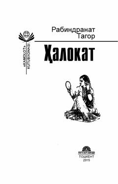

HTaqdir o'yinlari va kutilmagan fojia girdobida qolgan yoshlarning hayot yo'li haqidagi ta'sirli roman.
Roman taqdir taqozosi bilan bir-birini tanimaydigan yoshlarning nikohlanishi va kutilmagan fojiali voqealar oqibatida hayotlari tubdan o'zgarib ketishi haqida hikoya qiladi. Muallif qahramonlarning o'tmishsiz qolgan holatda o'z taqdirlarini qayta qurishga bo'lgan intilishlarini va insoniy munosabatlarning murakkabligini tasvirlaydi.